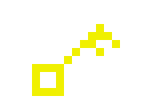
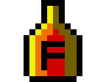
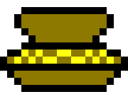
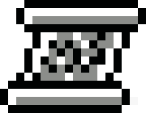
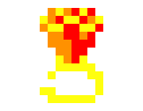
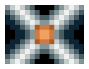

Instructions de lancement
En executant "GatePC 1992", vous obtiendrez une petit menu. Tout ce que vous
avez à faire est de cliquer sur le bouton "play". Après un peu d'attente, vous
devriez voir ">>>Press SPACE to continue<<<". Tout ce qu'il vous reste à faire
est d'appuyer sur espace pour lancer le jeu.
Si vous n'êtes pas dans le cas de figure ci-dessus, assurez vous de bien être
dans le dossier GATECODE (si ce n'est pas le cas, faites "cd gatecode"), et si
c'est le cas, entrez "g".
Objets en jeu

Permet d'ouvrir les portes normales

Régénère instantanément un peu de vie

Donne au joueur un montant d'environ 100 pièces d'or

Contient un message pour le joueur
Permet de porter un item supplémentaire

Fait augmenter le score de 100 points

Fait spawner des ennemis à intervalles plus ou moins réguliers